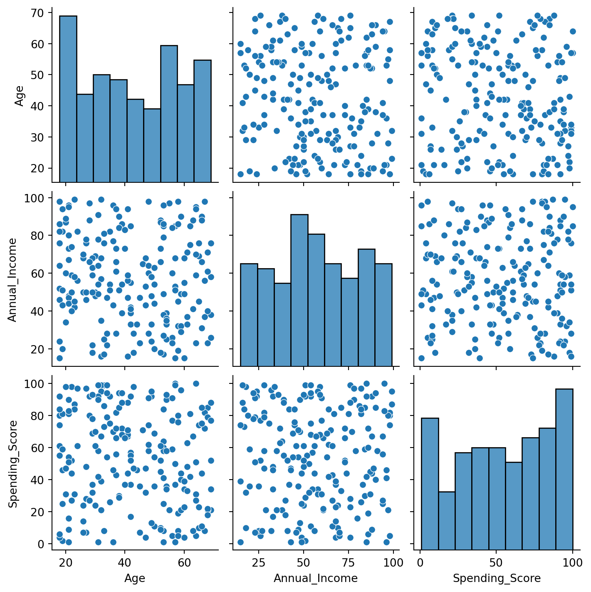
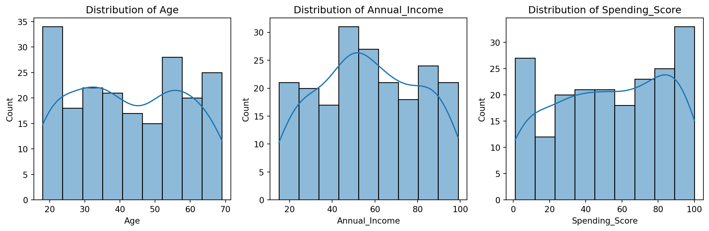
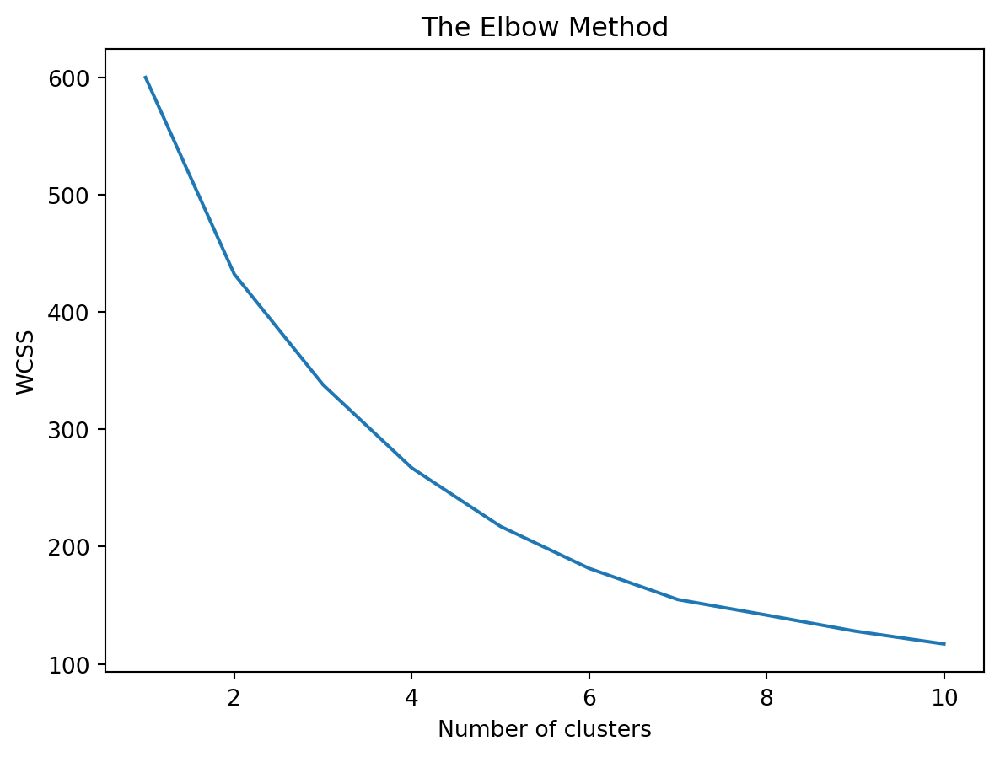
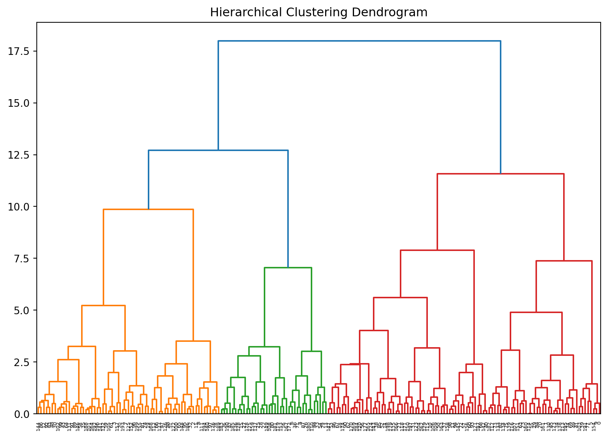
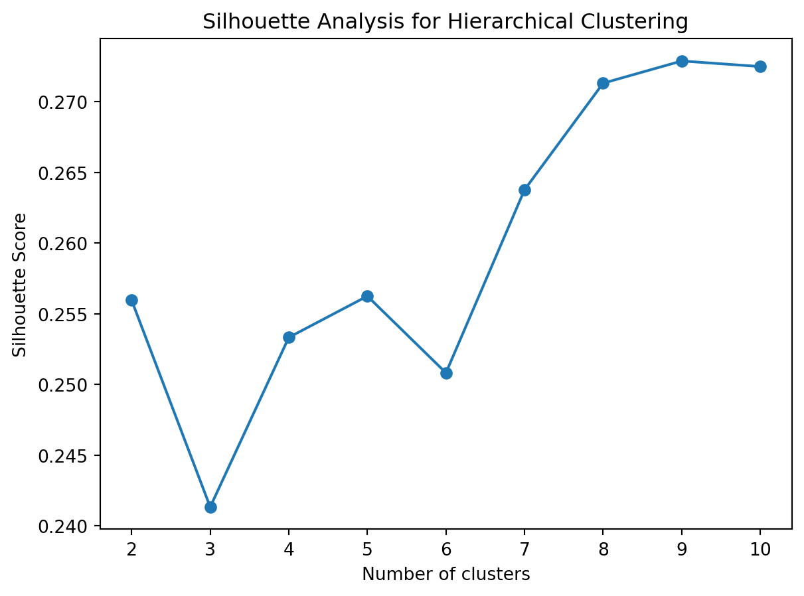

Advanced Clustering and Prediction techniques Using Retail Customer Data
Employing sophisticated clustering techniques with retail customer data and comparing further with prediction models
Clustering is a fundamental technique in machine learning that involves grouping data points so that the objects in the same group (or cluster) are more similar to each other than to those in other groups. It’s a form of unsupervised learning, as the groups are not predefined but rather determined by the algorithm itself. This approach is particularly useful in understanding the structure within data, identifying patterns, and making strategic decisions.
In this blog, we will explore how to apply clustering techniques to a customer dataset. Our dataset contains customer information with attributes like Customer ID, Age, Annual Income, and Spending Score. The goal is to segment customers into distinct groups based on these features, which can help in tailoring marketing strategies, understanding customer behavior, and improving customer service.
Introduction
Data Loading and Basic Visualization
# Importing librariesimport pandas as pdimport matplotlib.pyplot as pltimport seaborn as snsfrom sklearn.cluster import KMeansfrom sklearn.preprocessing import StandardScaler# Load the datasetcustomer_df = pd.read_csv('clusteringCustomerData.csv')print(customer_df.head())
#Visualize the distributions and relationships between features.sns.pairplot(customer_df.drop('CustomerID', axis=1))plt.show()

Data Preprocessing
#Encoding categorical data and scaling features.#Standardize the data.# Selecting features to be scaledfeatures = customer_df[['Age', 'Annual_Income', 'Spending_Score']]# Standardizing the featuresscaler = StandardScaler()scaled_features = scaler.fit_transform(features)# Converting scaled features back to a DataFramescaled_features_df = pd.DataFrame(scaled_features, columns=features.columns)# Displaying the first few rows of the scaled dataprint(scaled_features_df.head())
Beyond basic visualizations, we’ll use EDA to understand the data distributions and potential relationships.
# Visualizing the distribution of featuresplt.figure(figsize=(12, 4))for i, col inenumerate(['Age', 'Annual_Income', 'Spending_Score']): plt.subplot(1, 3, i+1) sns.histplot(customer_df[col], kde=True) plt.title(f'Distribution of {col}')plt.tight_layout()plt.show()

Advanced Clustering with Multiple Techniques
We’ll explore different clustering algorithms beyond K-Means, such as Hierarchical Clustering and DBSCAN, to understand how they segment the data differently.
1. K-Means Clustering
#Using the Elbow Method to determine the optimal number of clusters.wcss = []for i inrange(1, 11): kmeans = KMeans(n_clusters=i, n_init=10, random_state=42) kmeans.fit(scaled_features) wcss.append(kmeans.inertia_) customer_df['KMeans_Cluster'] = kmeans.labels_plt.plot(range(1, 11), wcss)plt.title('The Elbow Method')plt.xlabel('Number of clusters')plt.ylabel('WCSS')plt.show()

Application of K-Means
#Applying K-Means and visualizing the clusters.kmeans = KMeans(n_clusters=5, n_init=10, random_state=42)customer_df['Cluster'] = kmeans.fit_predict(scaled_features)sns.scatterplot(x='Annual_Income', y='Spending_Score', hue='Cluster', data=customer_df, palette='viridis')plt.title('Customer Segments')plt.show()
Visualize the clusters formed by each algorithm in multiple dimensions to gain deeper insights.
from scipy.cluster.hierarchy import dendrogram, linkagefrom sklearn.cluster import AgglomerativeClustering # Import AgglomerativeClustering# Performing Hierarchical Clusteringlinked = linkage(scaled_features_df, method='ward')# Plotting the Dendrogramplt.figure(figsize=(10, 7))dendrogram(linked, orientation='top', distance_sort='descending', show_leaf_counts=True)plt.title('Hierarchical Clustering Dendrogram')plt.show()# Perform hierarchical clustering and add the cluster labels to customer_dfclustering = AgglomerativeClustering(n_clusters=3) # Specify the number of clusterscustomer_df['Hierarchical_Cluster'] = clustering.fit_predict(scaled_features_df)# Hierarchical Clustering Visualizationsns.pairplot(customer_df, vars=['Age', 'Annual_Income', 'Spending_Score'], hue='Hierarchical_Cluster', palette='viridis')plt.suptitle('Hierarchical Clustering', y=1.02)plt.show()

Hierarchical Clustering Cut
from scipy.cluster.hierarchy import fcluster# Cutting the Dendrogram to form clusterscustomer_df['Hierarchical_Cluster'] = fcluster(linked, t=3, criterion='maxclust')sns.scatterplot(data=customer_df, x='Annual_Income', y='Spending_Score', hue='Hierarchical_Cluster', palette='viridis')plt.title('Hierarchical Clustering')plt.show()
Silhouette Analysis for K-means and Hierarchical Clustering
1. K-Means Clustering
from sklearn.metrics import silhouette_samples, silhouette_scoreimport numpy as np# Calculate silhouette scores for different cluster numberssilhouette_scores = []for n_clusters inrange(2, 11): kmeans = KMeans(n_clusters=n_clusters, n_init=10, random_state=42) cluster_labels = kmeans.fit_predict(scaled_features) silhouette_avg = silhouette_score(scaled_features, cluster_labels) silhouette_scores.append(silhouette_avg)# Plot silhouette scoresplt.plot(range(2, 11), silhouette_scores, marker='o')plt.title('Silhouette Analysis for K-Means')plt.xlabel('Number of clusters')plt.ylabel('Silhouette Score')plt.show()
2. Hierarchical Clustering
from sklearn.cluster import AgglomerativeClustering# Calculate silhouette scores for different cluster numbers in hierarchical clusteringsilhouette_scores_hierarchical = []for n_clusters inrange(2, 11): hierarchical = AgglomerativeClustering(n_clusters=n_clusters) cluster_labels = hierarchical.fit_predict(scaled_features) silhouette_avg = silhouette_score(scaled_features, cluster_labels) silhouette_scores_hierarchical.append(silhouette_avg)# Plot silhouette scores for hierarchical clusteringplt.plot(range(2, 11), silhouette_scores_hierarchical, marker='o')plt.title('Silhouette Analysis for Hierarchical Clustering')plt.xlabel('Number of clusters')plt.ylabel('Silhouette Score')plt.show()

Conclusion
#In this in-depth analysis, we have explored different clustering techniques and visualized their results to segment customers in a comprehensive manner. Each method offers unique insights: K-Means provides clear segmentations, Hierarchical Clustering helps us understand the data structure, and DBSCAN identifies core and outlier points effectively.
By comparing these methods, we can choose the one that best suits our specific needs for customer segmentation. This advanced clustering analysis can guide strategic decisions, improve customer engagement, and enhance targeting in marketing campaigns.